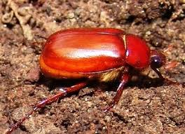

-Photoroom.png)

Insetos tipicamente rizófagos e subterrâneos, e outras pragas que ocorrem mais eventualmente, como brocas e outras larvas de solo. Estas espécies, sob ponto de vista da fenologia da cultura e das ações de controle, são também classificadas como pragas iniciais da aveia. Os corós são larvas do tipo escarabeiformes morfologicamente bastante características O ciclo de vida destes insetos, constituído por ovo, larva (coró), pupa e adulto, é bastante longo, atingindo um ano em D. abderus e dois anos em P. triticophaga, motivo pelo qual podem ser pragas em mais de uma cultura, em uma mesma geração.